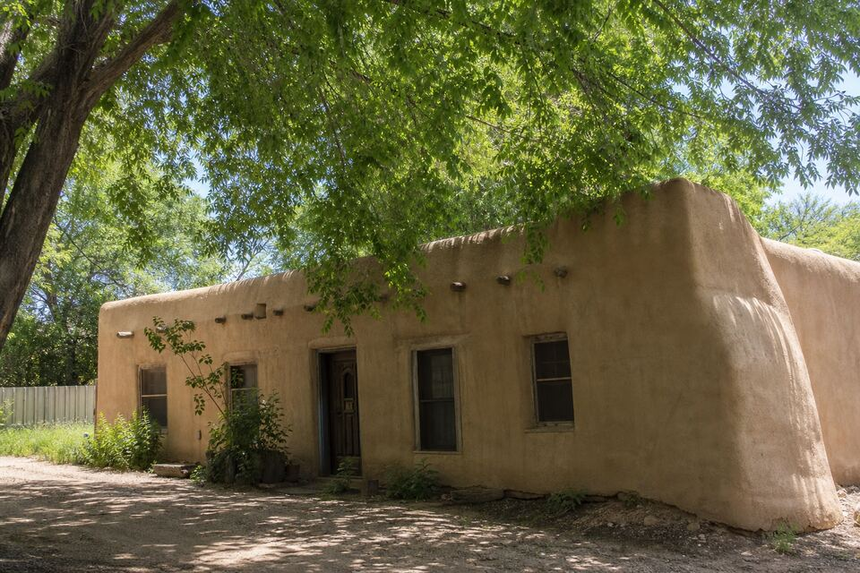

Stucco Work in Tesuque, NM
Tesuque’s lanes hold real adobe — homes whose walls are earth and whose plaster must breathe. Work here starts by respecting what the wall is made of. Cracks, parapets, color, or a full project — call (505) 416-4951 or send the form; one plain sentence about the wall is enough.

The breathing-wall village
More than anywhere nearby, Tesuque work begins with the material question: many of these homes are genuine adobe, sometimes a century of it, and the rule is absolute — breathable lime or earth plaster only. Cement stucco and sealing coatings on adobe trap moisture in the mud brick and dissolve the wall behind a tidy face; half the serious adobe damage in Northern New Mexico traces to exactly that well-meant mistake. The visit identifies the wall first, and where an adobe has already been cement-coated, you get the honest conversation about its options rather than another layer of the problem.
Tesuque’s setting adds its own physics: cottonwood shade and the creek bottom keep north walls and wall bases damper longer, so coved bases, splash zones, and the lowest courses get a closer read here than on an open mesa lot. Slow moisture is the village’s quiet antagonist, and breathable finishes are how these walls have beaten it for a hundred years.
Services available in Tesuque
The full lineup runs here as it does across the area: repair, re-stucco and color coats, new installation, and parapet and canale work — with the material guide deciding what belongs on which wall and the cost guide covering what moves the number.
Wall on your mind in Tesuque?
Send the form with your area and what you are seeing. The look-at-it visit does the diagnosing; the written scope follows.
Questions people ask
Our adobe was cement-stuccoed decades ago. Is that bad?
It is common and worth assessing calmly — some walls coexist with it, others show the trapped-moisture damage. The visit reads yours and lays out options honestly, from monitoring to staged remediation; nobody should sell panic or another sealing coat.
Is lime plaster maintenance really worth it?
On real adobe, yes — it is not nostalgia, it is how the wall survives. Lime work recurs on a longer-than-people-fear cycle and costs far less than rebuilding dissolved adobe.
Why does the bottom of my wall fail first here?
Shade, splash, and creek-valley damp work the lowest courses hardest. Base details — coving, drainage, breathable finishes — are the Tesuque specialty for a reason.